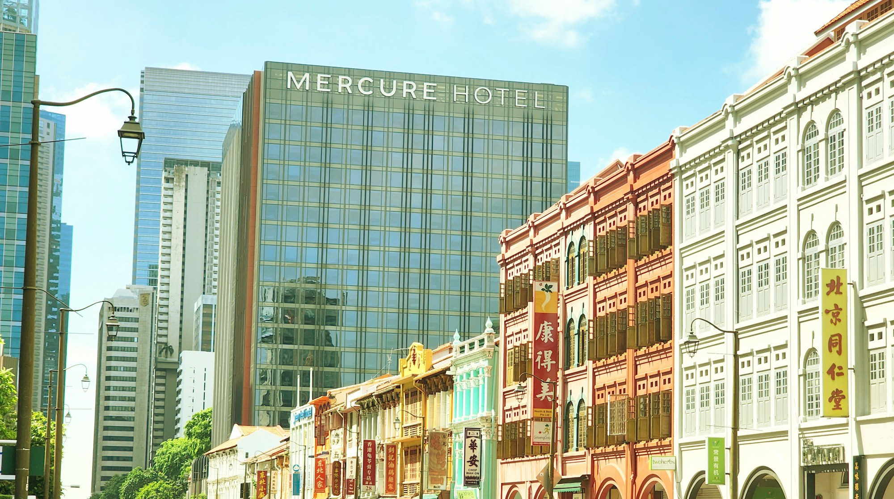
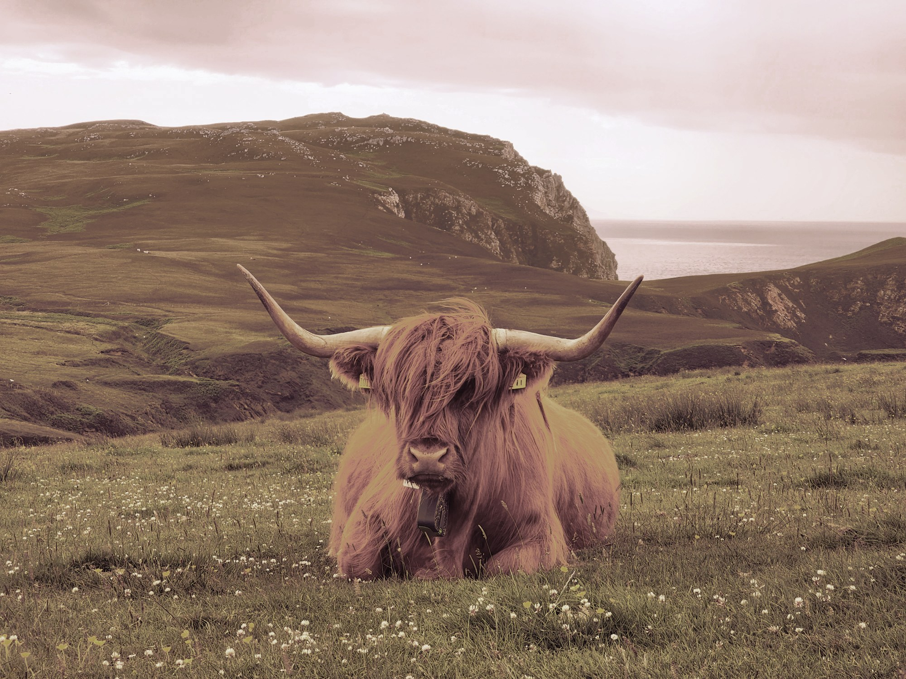
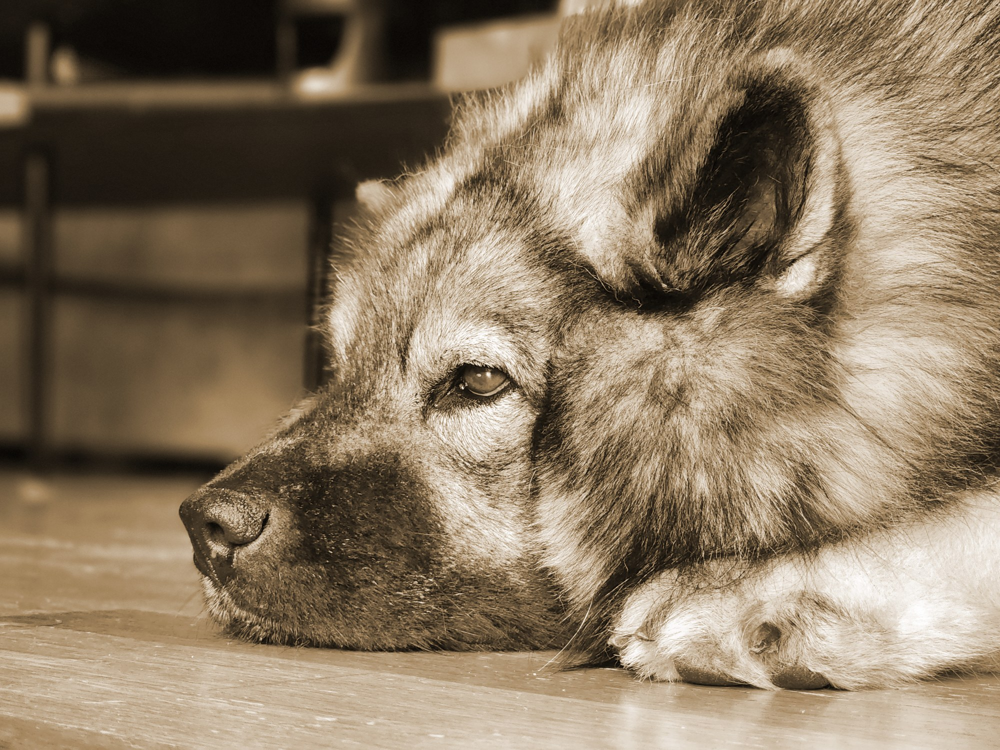

Tre bilder från serien, visade sida vid sida med originalen. Jag har anpassat ljus och färg så motiven hör ihop, och låtit varje bild behålla sin egen karaktär.
Original

Redigerad
Bild 02 · Beskärning
En renare vy över gatan
I originalet skymmer ett oskarpt objekt en stor del av nederkanten. Jag tog bort det genom att beskära bilden, och justerade sedan ljus, kontrast och färgton för att få fram fasadernas varma färger.
Original

Redigerad
Bild 10 · Färgkorrigering
En mjukare kvällston
I Photopea minskade jag färgmättnaden för att tona ner det kraftiga rosa färgsticket i himlen och skapa en mjukare, mer dämpad färgskala. Den varma kopparfärgen i pälsen finns kvar och knyter an till seriens naturtoner.
Original

Redigerad
Bild 12 · Färgläggning
Varm päls, sval skugga
Originalet var svartvitt. I Photopea använde jag Nyans/mättnad och funktionen Colorize för att färglägga hela motivet i en varm ton. Den varma tonen gör pälsens struktur tydligare och passar bildseriens mjuka färgskala.